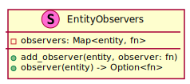

6.6. UI Widgets, Layout, and Styles¶
In addition to showing the game board, FossXO’s User Interface allows players to select different game modes, configure options, and view speed run best times. Amethyst provides a UI module, but it is intended to be used as building blocks for a game UI instead of being used directly.
Therefore, FossXO provides a ui module that provides a high level interface
around the low level Amethyst functionality. This section describes how high
level UI widgets are constructed from the Amethyst building blocks, including
how the UI is styled, laid out, and incorporated into the rest of the game.
6.6.1. Amethyst UI Overview¶
The amethyst_ui module provides the building blocks for creating game UIs. It actually contains three separate ways to create a UI.
The UI can be constructed directly using
UiTransform,UiText,UiImage, andInteractablecomponents. 1 All fields of each component structure must be provided during creation. Also, this is the method described in the Amethyst book.The UI can be loaded from a
.ronfile using theUiCreator. The entity that defines the root of the UI is provided. Additionally, theUiFinderis used to locate child elements. The down side of this approach is creating the.ronfiles gets tedious and there is no style sheet support making changes difficult. The Amethyst repository contains several examples of this method. 2The
UiButtonBuilderandUiLabelBuilderbuilders can be used to help build buttons and labels. The builders use default values for any missing fields.
Based on initial experimentation and the Amethyst documentation, building widgets directly from Amethyst components seems like the best method to base the higher level functionality around. This ensures we have visibility into the exact set of entities and components being created. Additionally, our high level API hides the verbosity of creating widgets using this method.
6.6.2. High Level API¶
FossXO’s ui module provides a high level API to construct game menus and the
in game controls. 3 The Menu structure allows creating
Menus related widgets, provides UI event handling logic, and holds
the underlying entities. The Menu structure and supporting types are
shown in Figure 6.17.
![!include rust_types.uml
hide empty members
struct(Menu) {
- ui_entities
- observers
+ new()
+ layout(world)
+ delete(world)
+ handle_ui_event(world, ui_event) -> Option<fn>
+ set_title(world, text)
+ set_close_button(world, text, on_close)
+ add_button(world, text, on_press)
+ add_link_button(world, text, on_press)
+ add_separator(world)
+ add_paragraph(world, text, num_lines)
+ add_player_selector(world, initial_player) -> PlayerSelector
+ add_text_box(world, label, initial_text) -> TextBox
+ add_check_box(world, label, is_checked) -> CheckBox
}
struct(PlayerSelector) {
+ selected_player(world) -> Player
}
struct(TextBox) {
+ text(world) -> String
}
struct(CheckBox) {
+ is_checked(world) -> bool
}](../_images/plantuml-0bcad2e083e7e433981564c77d7075e87bc794d2.svg)
Figure 6.17 Menu and and supporting types.¶
The GameControls structure holds the controls shown during an in progress
game. This includes the hamburger menu button, status text, and next game button.
Figure 6.18 shows the GameControls structure and
related types.
Figure 6.18 Game controls and related types.¶
The types provided by the high level API are specific for FossXO. For example
instead of providing a generic toggle switch, the menu builder provides the
PlayerSelector widget to hold the Single-player menu
Play as selector. This allows us to focus on creating the controls
needed for the game without having to handle potentially many different use
cases of generic controls.
6.6.2.2. Accessing UI Data¶
When a state might need access data contained in a particular widget, the `
Menu` and GameControls structures return an instance of the widget when
constructed. For example, add_player_selector() returns a PlayerSelector
that can later be used by the state to see which selection has been made.
However, in most cases, the game’s systems take care of managing and updating UI related data so the state’s don’t have to micro-manage the UI.
6.6.2.3. Handling UI Events with Slots and Signals¶
The UI buttons use a basic slots and signals concept to handle button presses.
When a button is created, the a on_press callback is provided.
The handle_ui_event() method returns the previously registered callback
that is associated with given UI event. 4
The state can then use this to invoke the logic for the specific button preventing
states from having to implement long and bug prone if / else if chains.
Listing 6.4 shows the typical signature of the callback.
fn on_my_button_press(&mut self, world: &mut World) {
// Handle the press event here
}
The ui module uses the private EntityObservers structure, shown in
Figure 6.19, to help with mapping UI events to callbacks
registered during the building process.

Figure 6.19 Event observers struct maps entities to observer callbacks.¶
6.6.3. Styling¶
An important part of any user interface is to have a consistent style throughout. FossXO achieves this by specifying common UI widget properties in a style resource as shown in Figure 6.20.
Figure 6.20 UI style resources. Additional style structures are added as needed.¶
The style resource holds the common properties to all the UI widgets. When the
widgets are being constructed, the UI style is fetched from the world and its
properties are used instead of hard coding values for each individual UI widget
as done in .ron files. For example, if the UI designer wishes to use a
different font, every widget gets updated.
The ui module provides a load_style() function that loads assets
required by the style such as fonts, icons, and background images. This ensures
these resources are available when the game board or menus are displayed.
6.6.4. Layout¶
In addition to having consistent style, it is important to have consistent and
predictable locations of UI widgets. Requiring the UI designer to manually
specify coordinates to place widgets is both tedious and error prone. FossXO’s
ui module automatically determines where UI widgets should be placed. This
feature is known as automatic layout.
The Amethyst UiTransform component controls where the UI widget is drawn.
The position is specified using World Coordinates with x-right and y-up.
The Z value controls the draw order with widgets with a higher Z order drawn
over those with a lower Z order. Also, the UI uses its own projection matrix,
thus its scale is different than used for the environments.
The origin of each component is selectable via the Anchor enum, shown in
Figure 6.21.
Figure 6.21 The anchor point sets the origin of the widget.¶
The ui module takes a few different approaches to layout depending on the
type of widget.
6.6.4.1. Fixed Content¶
Many widgets have fixed locations. For example a menu’s title, close button, and the hamburger button are all placed in fixed specific locations. The layout logic for these items is fairly straight forward, but it must still account for any style properties that affect the positioning.
6.6.4.2. Content Stacking¶
The main content of menus is stacked and centered on the screen. Using the
Anchor::Middle variant allows Amethyst to take care of the majority of the
work. This will both horizontally and vertically center each component.
However, to prevent all the widgets from overlapping, the layout system must
take into account the total height of the content, the height of each
widget and margin between widgets then adjust their Y offset accordingly.
The pseudocode in Listing 6.5 shows one way this can be done by first calculating retaliative Y location of each widget then shifting the entire group to be centered.
Set widget offsets:
calculate the widget's center point Y using its height,
margin, and center point of the previous widget:
center point Y = previous center point Y - (widget.height / 2 + margin)
Vertically center widgets:
Calculate the total height of the widgets.
Calculate current center point Y value from the total height.
Calculate the offset from the expected Y value. Since
widgets are anchored at the middle, the expected
Y value is 0.0.
Add the offset to each widget Y value thus vertically
centering the group of widgets.
Footnotes
- 1
There are additional components that are useful such as
Selectable. See theamethyst_uidocumentation for additional components.- 2
A weird bug was encountered where creating buttons using the
UiLabelBuilderwould cause buttons loaded from via theUiCreatorto render in weird places and not be deleted when the root element was deleted.- 3
FossXO’s UI APIs are designed specifically around FossXO’s interface requirements. They are no intended to construct general purpose user interfaces.
- 4
A reference to the observer callback to invoke is returned from
handle_ui_event()instead of being directly invoked due to Rust’s reference borrowing rules. The borrow checker prevents using closures to capture a reference to the struct when the callback is created like one might do in JavaScript. Additionally, while prototyping it was found the Rust compiler was unhappy with passing&mut selftohandle_ui_event()asselfwas also being used to access theMenustruct.